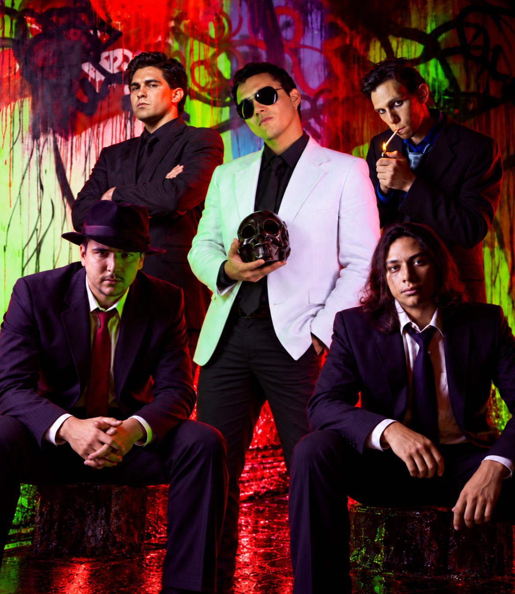
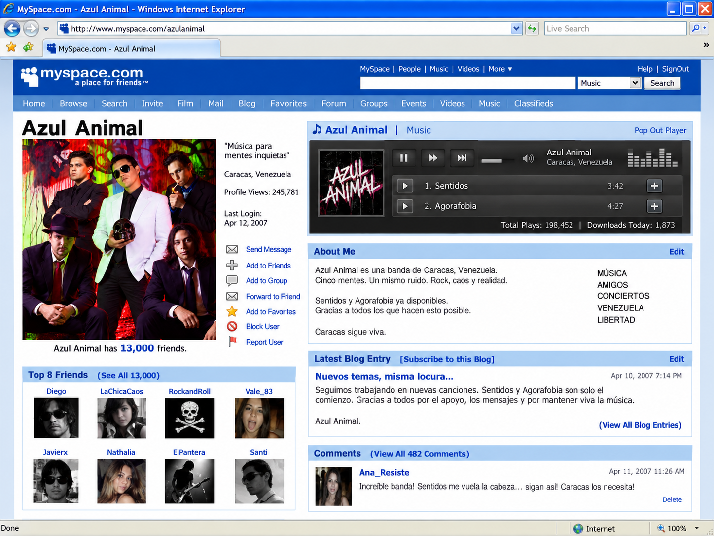
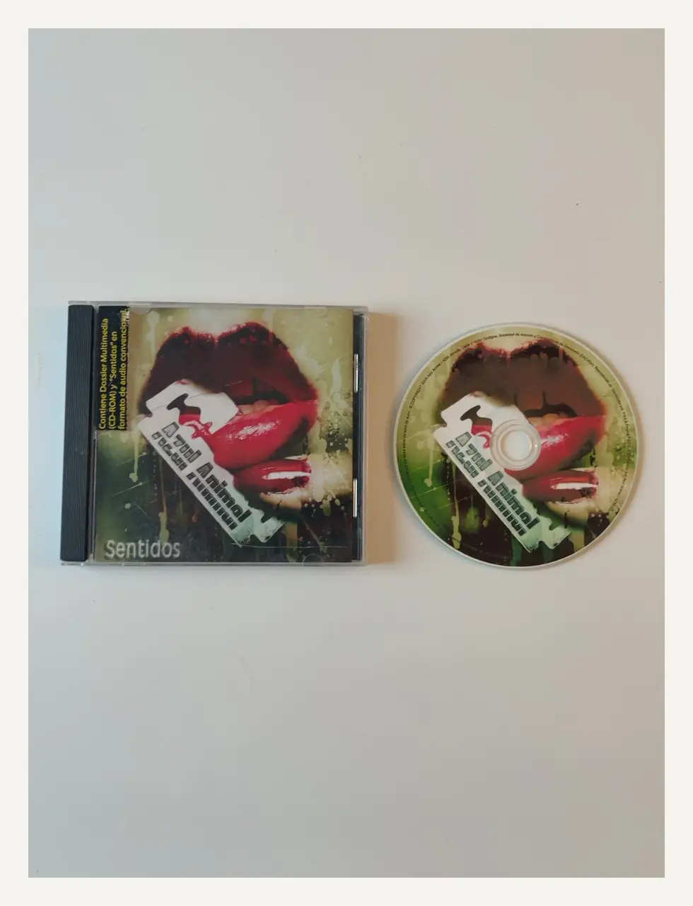
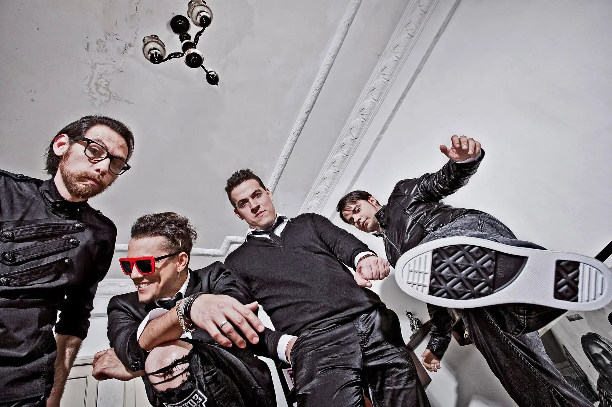
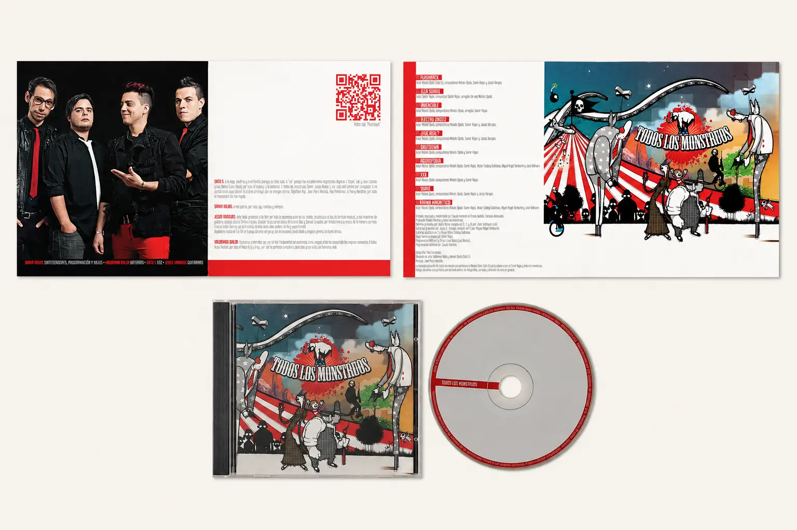
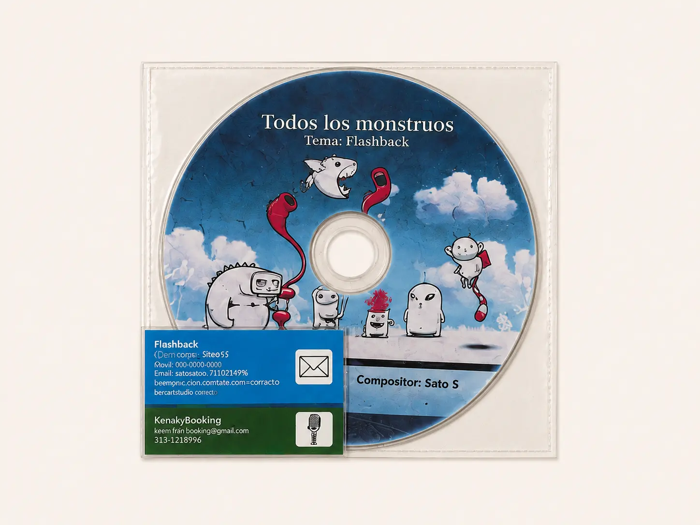
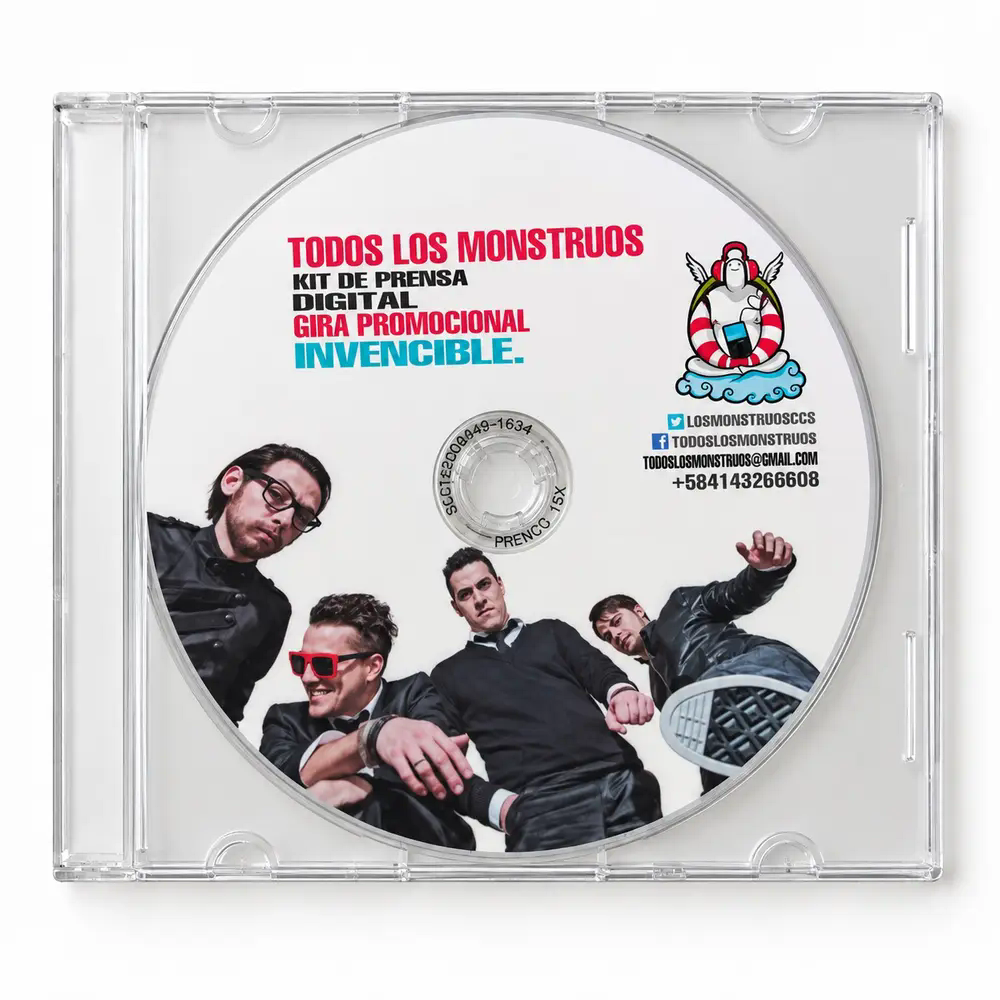

Three independent artist-development case studies. They are presented here not as a discography, but as evidence of how I build repertoire, identity, narrative, live experience, release strategy and audience around an artist.
Since 2004, across Caracas, Buenos Aires, Mexico City and now Berlin, I have developed my own music projects and contributed to those of other artists.
Independent artist experience · A&R application
From building my own projects to developing others.
My experience spans the full development process: ideation, songwriting, music and general production, visual identity, live development, media attention and releases.
01 / 03
Azul Animal
Caracas · 2004—2009

Azul AnimalPromotional portrait
Azul Animal was my first experience building a music project from the ground up. As vocalist, songwriter and creative lead, I contributed not only to the songs, but also to the development of the band’s identity, digital presence and live proposition.
At a time when MySpace had become an essential platform for independent artists, we built a community of more than 13,000 followers, primarily across Venezuela and Mexico. That international connection led to Sentidos and Agorafobia being included in Alter-Nation: Compilado Alternativo Mexicano, released by Carpe Diem Records México.

Azul Animal · MySpaceDigital identity & community
The project’s visual identity was built around a distinctive use of colour and carried consistently across social media, promotional material and our multimedia EP. In parallel, I worked on strengthening the live show, overseeing the technical rider as well as the artistic and operational details of each performance.
Azul Animal received airplay on programmes dedicated to alternative music in Caracas and other Venezuelan cities, and performed in emblematic spaces within the independent circuit, including the Moulin Rouge Band Festival.
Azul Animal became my first school in artist development. It taught me that a band is built not only through its songs, but through the integration of music, identity, production, communication and audience connection.
Multimedia material included with the “Sentidos” EP.Azul Animal

SentidosAzul Animal’s first single · 2009
This compilation opened the door to the underground market in Mexico City and its surrounding scene, helping us grow to more than 13,000 MySpace followers.
Alter-NationCarpe Diem Records México · Includes “Sentidos” and “Agorafobia”
0113K+ MySpace followers across Mexico and Venezuela
02Two tracks released in Mexico through Carpe Diem Records
03Alternative radio airplay and a recognisable live identity
Press · Radio · Audience
From a growing audience to Caracas radio.
Our ability to bring people together at live shows helped Azul Animal earn a place in the Caracas radio circuit. The audience we built around the band opened doors to radio exposure, connecting our live presence with new listeners across the city.
Live performanceAzul AnimalTV interviewAzul AnimalRadio interviewLa Mega
02 / 03
Todos los Monstruos
Caracas · 2009—2014

Todos los MonstruosPromotional portrait
I founded Todos los Monstruos in Caracas in 2009 and led its development as both a musical project and a multidisciplinary creative universe. By 2012, the sound we had developed in the studio—blending genres, electronic rhythms and technology—had become genuinely distinctive within the scene and its moment.

Todos los MonstruosAlbum artwork · Physical edition

EP FlashbackFirst single by the band · 2012

“Invencible” press kitThird single by the band
In collaboration with Venezuelan visual artist Jean Piero Montilla, I created a distinctive conceptual language connecting the music with artwork, flyers, press materials, storytelling and live performance. The project combined songwriting and electronic experimentation with Ableton Live and unconventional controllers—including PlayStation controllers used for real-time sampling.
Press & cultural impact
From an underground project to national coverage.
As a result of the work across music production, live production and press strategy, we achieved a level of media coverage that was significant for an underground, fully independent artist.
Selected press coverage · 2012—2013Independent media impact · Click to enlargePhysical release · Record storesTodos los Monstruos · Independent distribution
The video below brings together a selection of this coverage and documents the live-event production developed through the Todos los Monstruos collective. For our most important shows, we expanded the concert format into a multidisciplinary showcase featuring artists from different disciplines.
Press and live-production retrospectiveTodos los Monstruos collective
Official music videoSingle “Invencible”Selected graphic materialCollaboration with Jean Piero Montilla · Click to enlarge
Live experimentationPlayStation controllers · Real-time sampling
Our live performances also became a space for continued experimentation. They were ultimately one of the main reasons the band gained recognition in Caracas and across the country.
Live performanceTodos los Monstruos · Experimental live format
Todos los Monstruos was selected for Festival Nuevas Bandas, an important Latin American platform for emerging music. It achieved national radio rotation, extensive press coverage and appearances at major festivals, including Caracas Rock before more than 13,000 people. The release artwork was submitted for Latin Grammy consideration.
Beyond the music, I assembled and led a team including management, road management and press. I also created the Todos los Monstruos collective, expanding concerts into multidisciplinary events with circus performers, visual artists and guest musicians.
01Selected for Festival Nuevas Bandas
02National radio rotation and extensive press coverage
03Caracas Rock performance before 13,000+ people
04A multidisciplinary team, collective and live format built around one vision
A defining lesson
At the height of the project, I signed an agreement with a Colombian record label that prevented me from releasing new music for more than five years. It became a defining lesson in artist rights, contracts and long-term release strategy. During that period, I began developing #HarakiriRobot—an alternative creative path that would fully re-emerge years later in Berlin.
03 / 03
#Harakiri Robot
Buenos Aires · Mexico City · Berlin · 2014—Present
#HarakiriRobot · Love ist verbotenConcept poster · A story world in development
Synopsis / Love ist verboten
“We have everything, but we have nothing.”
In a world that has achieved everything it once desired—beauty, order, comfort and control—people discover what they gave up to get there: the ability to love. The more perfect life becomes, the more it loses what matters most. Against this backdrop, Amendment 999 grants new rights to automata that begin to show human qualities. Their presence raises the story’s central question: what is left of us when we have everything except love?
New multiformat project · In development
Record
AI short film
Book
Built from this conceptual premise, the project extends beyond music into an AI film created with AI actors and a book. We are currently beginning a crowdfunding process to take the already pre-produced songs into the studio and produce them professionally.
#HarakiriRobot began during the contractual period that prevented me from releasing new music with Todos los Monstruos. Initially developed between Buenos Aires and Mexico City, it remained largely unreleased before I resumed and reimagined it in Berlin in 2024.
The heart of this cyberpunk, post-apocalyptic story is love: in the pursuit of a perfect life, we gain everything and lose what matters most. The planned record, AI-produced film and book explore that premise through different perspectives.
Music · Work in progress
The Music
These three tracks are currently selected to present the project and may form the basis of the EP. We have more material that, with financial support, could also be included.
UFO
Read the lyrics
In the middle of the road today,
I see a UFO.
In the middle of the road today,
I’m sure, I’m sure.
I dreamed that you shot me
in the middle of the road today,
because I can feel you,
just like yesterday.
Monday, 2 o’clock.
Calor ultravioleta
que cocina mi cerebro
y derrite mi conciencia.
I was escaping from nothingness.
I was escaping from you this September.
Sombras
Read the lyrics
Sombras que se ocultan en el sol
y despiertan en la noche.
Sombras que aniquilan lo que soy.
They come in flaying low.
Sadness shot my world
with bullets of light
while this song plays now.
Video / player coming next
Blue Mountain
We recommend reading the lyrics here.
Support our crowdfunding.
Currently in pre-production for a new EP, #HarakiriRobot brings together songwriting, electronic experimentation, visual world-building and a community-led release strategy. Its crowdfunding campaign is being developed around limited-edition supporter kits containing exclusive materials from the project's fictional universe—turning funding, storytelling and audience participation into one experience.
The project is also in early conversations with Desperados Records and British producer Dom Goldsmith of HÆLOS.
01Concept, artistic universe and EP in active development
02Reward-based crowdfunding and direct-to-fan strategy
03Limited-edition supporter kits conceived as artefacts from the story world
Support the project →www.harakiri.com · Preview
What these projects taught me about A&R
Artist & repertoire development
Creative direction & identity
World-building & storytelling
Team leadership & live development
Audience & community building
Rights, contracts & release strategy
I have spent years doing artist development from the inside. Now I bring that experience to the A&R side of the industry.


![#HarakiriRobot poster: a dark-haired figure with a cybernetic eye and black coat walks through a futuristic city beneath the words Love ist verboten and Amendment 999]([... ELLIPSIZATION ...]pcjGOOO682WFzAZOp0cLSrFdaHmmN3PTtLMAYpIJHVphe2khseEnOOB+HHmk6k5cGYtR70+Xl1s1ycVQCGgsl9b00oo3NPPGqAKAP0Z1CqhpgLS3PLST/rKpZI6uRXull2xiE4ZRLbnHPlMr9rLGMPSRg7O5aKZWk7Ii6DTtj63IsGxCPEcZvQ7wRKxJfMa9443w7Dybm4R5xo5NP6rG+zSz6uTQQVGK6q+RlMMMWR6h4LWt+Ttj5eGDKP4Ykp9n1j3LjBisv7fbx4ug68JHICy0Ln0Ql0P2sLwH+GSJLtbqtyEOYsGbm+eWZY5lQ3izjem+sE2djuJKnP1NWVNeaM9izGmYdRpibPQZrQwwmbXqK2byGjRs9ut2Dn6DuUsSXltBxLOYTb/JRGHx9DsGoUG2QF7qyBjdn4caIg2h9NfNAhrgEkREyCRQaAOUokdajMDzSYS2md0ub4Aa9xRKcB4WA0mXTkTwePIhs3Pn5WNn/b19MQwLRm9xY4L1ORfZ6tVa6ACcYSDzTUkY3KOqFNQNN9cvKfT63GmsSYQBtDPV+Hk/I2CYJqIdPHBSsTiucOns+Dr5YQG1zbRRfzelhZ70wEqZsNJce/1SboeTURJr1Cvoqg8yFfSl5oeUO7O2ITBTBCBP6Dlj/GNZT8wG7dPmbgF3m28n3f+3SDieTKGfiZ3GnRMPDUpMXCFh0VQzMz2ik6a+co0HRz+NXoFCGW42uXo9R5UEHszuerOGe8YrZOvaay7nQAMMM1I0qXHlpaBXcqvRyOIS0SW8pjAe2FjSmzoHQRbJIh2T/B/5qGokD0NZ3K+35m714NQ/uql6F+LFlTHE+AeyzUtAG+EvVf5d0FTkQRUiKe/BtTpQFt8Mq5h7MxP2hq3WufKSPXg2vwTZ+6TVH92MEFGjNqeoy6LndXHrH1UaEcl6XmasFuxPq1lORvGsKA51e7Y2qQLuI9Sa/AP7llCzVoK3ZCPnzv4Pf0KVXGW31O0aA3ytHU9ltWfio2EwJI/hiWbvlHn1hASnbivHt0y+C+b9r9BlEwK4raViYTvFacUCJ2UM1fhLlQ5t4furzHeXUHaPXjvK02uTUrGzKNdcVJgNzFdvj+Bm8ix+VQ6Tr0Mf+7Tvi4HXTKQwGYMEwQjoxAe2UOCD9KSvWzmSknITvoTU8RwBxg2IosR0KD1dsPB40Y5ZT3v+EZNIhK3jhRCjt9W6b4L7AhNfTOMe77DqLQ/azh2HZ+dYqLFGGXTi9UNp/ThhR7ZRWj/bLywzJzuytFoIeM0F/3uWHRaYQlmeAHsvdAv6YSd9GPTYAQ/LFJ6BkMRXrUSqHRYTwFWYfVIGSljQVdgp+FySqAFyB2mpAG2UY8POgjdLjovy5yXPrYU+W04gm03vZWQU/LjzR6hMb78dRmnG3l4Fu0PFFjiJLe4ZYS+x6r+Rd4FmXxeX9L7s14sKJ+5zbMrQ1Ib++3aXhdQxMEIb3ASS9XrM3nWbNA2/5wFsCUnZ6aqpKAX5q+CzIwGuZa4PVPZU18anDnkTPtIB07KuDe8JTO0qy+XaRNNgXqeq4qdiwLPwV1gk6EnP1waDEFWwYOUU1mT9Bc3IhKg7bIqjhNaQf996OO1dH4QFT9k+t63s889Gj/buwzlIWulA1zH7+efdPUKt2rMi7BQku7JZ0+Y94zlHq486XQak5tDZRURQyypi4uIgkAM40ClOYfu1fxYJ+bvjt4izBHP7vpK0mlG3ONErmqFGTQrrwgM9cvTuWSdhQt2EJNamLp0nId1RXVLA/219TK+eKfgdwqoZlE29e904ygcV+4fUjyWheL9vc3tBzh5P+UVnGl/Z7dJz96RtITa6pOp3xc9ljRGpejv0NXvMyrI077xkoWya/zt1XnW6HM4epHutVYivFjEla+5nx/rgPPLlk2wszaUESU8lpzo25WjZLv3pK79G2exsvotRJa30oZS9d3q3FhzIkqkdvWhklBIXFeq1wEBxbhGqGkzr5MVENirWJ7FbhHisGFllTWtUxR+ln6bg44v4+aZA7gHmWV5XwT3YtasBOKy12ljAAwcKWvTRxO7caXCEaTyfpeEcRtjihS8J9LLisaOuG08AtWYgTTFGedPJpMcJHGVxiD+Sk/GgC+4nLFmm7x3WxPVSZD0aHOcQCOPS48guqug6/4IXWXAKTtGGIZEZofoFiJfTjBhNgnfogG3txCeec+rhzH736VYAqPlc5V0mzeKba/wiet9FKfYpqjG/T6qZku78YUlEeMyp9di0/syuM5f6RkS+B4IRjsIWlZamm0VRKwM1+JqgFMVbPKFFQOgTwAsClya3Xa/Sumo9pm2dYgCQiuQ1Dlwb4fIlrCO0RxHR7syDeDQ3YBPjKAZGwGPttkrHNi1aDaQYgkOnDLORWd7DrKgylD4ia+52+/eWqhCTSXTL5baGjl5pjp84FnbGiu1CAkS3LKEuIKukTNCZcnVIF0bvdBtPPaAz20Ip+DNP9em88ybkEOqB16xvTFvAbYNA9vdWJCDDHuI44/xsvVKIvkX1UhGYCw4WKmWRpQNCSHRq53W8J3sMOstFahviJmeIRDVKmC3EqCCCrRf3yTMCR1TK/07rXWXTOkPG027ojcSJuMeagfnS53iG2kApbnjSe6DxBiPhAFEAslPq2U9N0huR2TNbeA+bOqPM7uTd93RvJKw73iQ7C+7czEfddSw+Kj630ASnhrGLzQusiF5yDvJANiYELlA7MQj6G06nkme+pelve9xh6SzEwGfsiQnwIEyjTDpaHiajQAcs/ahudQ2AUNrT8JHA+evfKk5oMbQqxHjNp3vnse6eG/RVbggGhKmSfJyoCvvOhr2FQW9HFcIYhB5uUIh1vk1dWb5KhprUeIhxGTzPYxnImS4POnt6NKJyXUJwdSydVCli/sZ6ZHnz90AN++TbLxGQq5pVNde6Rh6JLsnOl+tPanAFkUygSiSVLddSZBfTb7KMXhozvqCYYGhRFFblj6g4S2N29xO83QMFMReC3sLUPAj40Zacc0z7gZEhz7uGPrBIqxPkaptVa2xVyNfmVQm0+PfeIwv35cs7VvmIJF48X4fZzHL0kDaFW+84+D4RwJUvFZ7RsX3bpOgqekG5eN31HLW6XEM3UA/r855o8b4ku9O3sPuhjMjuzZaSBw01EJfKevQ0Y9mcebuLn09j8c80yUQcvToSez0OTw2AMuRZmESyKa9Va8wruiHUgdr4ZhoTEVuxttSKwrT2UG6WXv83JKPVWPdaZBxRu2V4S7WDPnl9xXVtfp9kVSV5HqBlCZcR1uizkmVnXDfUJ5vccZtMxOy+y0Uu0x9LPOWxGqi5MIGhQEYC4p6PZ94Dumr1lQdOnDP8bYBDyLC39k5saOHIv4gnghM7kqCnJ7hY7VJzEuy6FVeE6MqAHKpvGn++HGyqMVEcI0KD1MWXRKswBc6SDaSc/yeW9pGxCV/cFYU2IBWlR4EcekAKr0hXYAtietxaV5ZjgQi5Fvwv5HNHBcblsU8dcgJIPiYw3hPuhst6dhrqdSVLF+iCuml3qp+cENVcAk2b0qSPGI8gvvwamQRlzRnAHJNMtz2elLWg9d8nARsNzoVs+MXv7ZIYDOgPzii4VkoEaGyHT8/ngS+ff/dS17V8jwXjGA456aBqugc+wzHwkP6mrpQPIDdelwlZbT9UUdkD9bGjq6jEehSo43xcBtqTrJQrdkkejTsNv4atA8f7u4Iq02lG1gYdllCrDcWoH46FUQLkkHn0++7l2iWmwSL2/7MfW0bzLdyAGxHcFap7vFAy80qGnQ5zc7bdlby08+EcpN5KcmGa74N093cVzUax8UarVhnzQIT5PfmEsPUe3mbSRoWawjGk/TFvuwXpMLP6lOiZsMf818DttkmfHbEtdDjZqWSeKBCkIEl6dm8OF20i/QoR9IbUWHYeEsxXyY6wkEse1qEB+DojKU5bmf6pJ62grxK5SAqjOGk4uCjZZINLqxZG/3B6dpzBrLHlohHvZ63iDamIzAj5lA/gikCUZU7Dq8cad0xYUjF+t2Pmr29RhOPgYwbsLMhfRSbCjDhVN4keKAltxhgpXrdxfskTRfxckS4K6GE8nDDLhdtSZQ758mJ1KgeDi8SGwhE025UArqWzblWVv4sd1nakFynH/B769JRIgfoqkLuvAWzum5aa/PYlX1o9hAL6cb0KOrstxDHcBmscoMsed1r+HtxQ9rvptB7VEaM5uUuA18CphTzuhzbWxG3x6X6mUBSiXll61OgRkfDubH3n5bCOI30BKrrBq7g+h/rlngrMcZ6OhyPYLr24E+xKeCMaM4pM4Tq4Z7BiI63FxAcfNgDYvJC/gRQXUNjZaZOVBjaqX2uyjeSyvWB8ZRiYRf5ab1kWizLmAL9+i8SkVJFbw+bUojuYJKJwUjK61/jeKiLnqrcxsQKM9pQyTCpJruSHuKKbyyA0OaRzcLcIX6rB7RvHrjBhRDvRDas6iL0l+Kvhw32F77i/j2h/xQ0iFyvETcxjwDbQfpbxFhoPqdekgiAFS6Dg1VHJWR06+zsLS1XHywVlU7Ti8zz39sr/hSDtexvg3rDoFPYrWvKAQKbnyysJgL2rq1S0/vFOCY/eFj9is7rJOte4x6PNMYVJBhNDNHN8CS/8g1v59tDwwBz9mIibsMkNzQj1GAZ8BBZTRHAtb4kDcjcXYkca8C3LH3Y5GxvSglsFSEFLvXFacbbWQKxjNKmewnRsf4N2cy9Tm36flse3VqLwzGAhFve1WMgubOTtNZBlTCVEPniidh8oXJG998VZEQKCgKu56SNdl4pqRCuSmKvOgMvP/wX5+WfAldqbTR9Uld3scfiwSF3Zdg66sjDQDVfUlyRG6BlyB20q5X3oO3DE0jQZTLtgvrUlKVkv3OKBOXlL51CFnHt9xWGbJQ73RxNU81HwvAtHvOToG+zf8twhNViW0/8EwAO8dQUEgZ3ABbPK5mCbsBufdA1BSISovbo+CtvnUUptsak9bTo0n+PIEaTpbX3dHbzg1fC+eLDRTaNp6ZxyYh7r7TQ7mKc5gS52V/DN39bZaC1rfMhQeJtpbbNnVB4SMHksaijRQwAK3FfiHKKKeudSjK9GUUhvKveuObzFHTLPNfrIz/hszsW7qkIlKkpzUtSn6SeJVWAdTZoucgzTVVF15clOMHdqe8qZKMv4IO5dRGybKKj7rte0cqEsuq3CmcUCUhrYS+5eYwrhZGVo6fA54odThACh8zWwQfL1BFC1JTgbeXTjXA/x2IfBc/pJxgD6K1WATXB/wZR3LkwVUgrAtNk3yHIVb2aFuEcvefNo9QzpROFQZdeP3Gcg8/8i3oppDJm6UEk4cakLEt7TRmvmvOfohkJ2YfVL2V85hDUx+E3cOfXqgWqPSuo5dn05csadJKrRaiNYjvTTZsYcYfqHX6L8jJZBGP3Fa4xJxBE6R48kKE/RLMVjTUbtj4huxvM0BBSyQZZYZyoIDW+5rS/2N9OcnonUashBs9i+mahvpFLxc6cp0HXTNJKPWU5jI6uvZY8yXJ/nQYERdHPg+OaafaJb9CQaJz/QBXW3+nSP9PjoAzWU1GfevY3YunyJRxmMTnvoz6VA0TDUSX4hCoy7B9zIE8f3ZOSqjVJdtnhdpmYrfVMFBaAK2ZuVCAEnTD4pz2SPpfhU9ASHAeDDaL9uOvYgc/BjpMeCRdhe9dPS+rqnsu0CcJ8ue2FBiCAZ7Qw49npQUNqHbDaVelT3m5+XBK+oZlsQsjHj2ZLvJryDnLimPJZOX0C6Exg5OPFCa7JpxoRkriA6fCrluo4gjF/+RtCJ62z4IDXJQjlXStbX8V8uQ6ItQFXyRp360kMd8Jjbywt1CP9eDzVYFfdaIEOEKa08g2Yl2SYKHn6rgzvDlIrFPTigexylPq1Jo0VVf1J5w6MSy0lcmSNO5oatjhSMVoon0+h5itsgW6p5ph/1OjXNKFf9uw9vVc5JRTE/j6ac2osm0ifoacTdq+gmw16GKBXEQRpO54FLc081m1ELvzVGj/hAyQ98VE/u3rlvkChv47X6EwpVKHsBAW0wbeYORObpLAXGLVwYeMzUipd1x3qqDHn17GRTWQg/TK8RvsZrVR0yapmj7mg5PWy2b2Q9hqIdpvjayOrEjFKR8Xtw8fNBACDtQz3jQjxyeVHCb0HdGGv7TDGELJkHrYa8w/OfyoaagCLlheCdVHMKKJBfg9CvIUkM9JcalsBYkOz5HSxRS54YcyDjcALxUBxlfc6QD0H8kqlxbn4iu9ht3ZH4Y8IylHDSfalLdPIs0IEptMdKHXFq46+LgddRuvbDuwTtcUMZisblL6eZs2w5AUwsXamIKgkRpMkHDzuJhjIQucSy/rJCszFdPHh1E34qat7mLzNdZnV8bhewFpWuicLl70gfcC3fvtBiOHXX/inLK3Z3l050Fq9MMvVvT5o7EvWUEvTq4vmv1kLu16g8w1ydJuMgrmSn5JTyUjhaaJIggrgiedK59FF5XIidmTH/7UKXtsITaSbvHROgnEsngV8hW1QoABy2efR9nbu+DQfErmq1shJpEapABogZ7/ByRlGidK9oIb6YkgXbrxenJEmsyHk4lzXlCcrQarN1DOEgbjA4gFJ5W/Tnp1db0bFVyXpkCFp8u+oOxAVUg/iMxazp8K1WVi1JzRWkB68rUX3J1uTbdDncKPGj6YB+HoHElaDFw6goGm6G3m4juwXLFiJRp77vuJCEBwnBf85i8a2VILujHDpg7yL6xytBAVEClMjyXHF9i908L/YjEiuYo/7B6PRwB2BGLda+6wFqRvCKjqNoqOUS2KgkYdZZncC5a1La4lD3IQIThhXn6WMWLb5zizU0l6Xptnjy6yTCgGlTAZaKPjFyL06zk3aknAhiNYv2Lz+/6v65ghpYdBWYCSuY4KQRgpUyn2V2GLbuoPEZh+qceGsMNxdy+iq0wbSiGb9Bpxoli2j0iMxF4ny5ye7RdpxFZcoQfPX3WHSzu9x2Mt7pr819HSe5TtEtHSrsUxkAJU+68kkHz8BrYNDwt3TLCkcQpxtG8taDPldoPLoALnufpZogXoTmNBUGA8E8hQnMJsKv4jSg6r4DNYCLWb28n6/r1A3cFS2rSqDawcgJsEM5+LserS0lSjoJMABmxV9Kfbsd9PAS+y3Qd1nO7gqaCEkB7urQSoDBDJEcSay9rnevlI4uE56eeyXvLddr1tf13kH60k0uyD70iyDWgQlyVRdnvV1or3U+v7M9FSfqujLbXYEEipvwYu1VTIw2bxPp0C24cc0X5f91j35mXU3w01IV/uj2jxSpGSyUcSlQpouFe8kaZyakF2sgX5fDPSAiosNYYWdJHrtlnvb7lKp55jsX8zs7V6Z7gKJ2Xv/ZZepR2e3jnBk5wb9cnS8YrBWQRGD4J6ZKHt423aCuLMspxBOft+P70A98hxlX50b+jWLJOHVBS0KFK7uUTG7hdmiVAMh6lEe3rTghrJit9RwNObocEEH520rYVBBm/MZXpSPybglBrkjKYKgYBPwJDUdl7DDqQRl0yLKsiaXie7hSUU0sdJFIAqrgALKoZRE7XvV94C2QxvfQZQQaBlUB1DMA/d4Cm8Jc4XAk5qeEs2Ooemf78OnN8XyVlch4ZFe7waMEZzLSKpA4LLa6P37zNRCINzfPt7zF3CN71ioxa9BttCrgejZGnTuAvzJCYjN8O+2RSTmkfiqnK0ubpIBGsH6e27avi7BExaRqiB29JPhk7IO9SkSN7IHBqxFwf8TG3CBxzK2wvP+45ZzLdDHV8N1iCsRZLAMNBa+eQEYONbl6Nrb68jhGDqBt9NyraA8psTKoZF2HnouY0li09Pr98lM1qsjMnGsVUIvPxWk9YsnVuclQdeyKZW231hvO5Gbs//XTjCFod1X6sycLNfhtlb8j37uFepeHvelKYrJqJG9m/bKi2fCMRovj+W9y0UnHArUNDoftyPBYfwZM5VxaFmkuwFYbmccwbmR4cSJnwyVjJcpQ+BY5NxOWAAMMGtHF30hThYn9i0LjMQ8yVlT2upugoFr88/G1KbW7hbNYiBdAw9vZDkK4sPi1sfjnkQ5D+adGqNbxdfcjqyVxrudXcIm9doA+d2IxHm5NXq2eDxxlyKEVUENOe7TvZpgAL2sxxpcJ7pdBufwgAEBMH0f3YjCdupnvinwkdYxZbAZ1yy3U97+WIh970ghhLcDoruhjmzNcCQRidhWsSEPvEyLHAw4yNHgR4HnJ4L3hgjdDJAcQp42P9t2yU6jyMYS96zsIeAn5vLIo8UX5CuRGVBnrR8PRVbKhIBb5Lb521TFdc6Yd/NEgm2R2Gykqz4LSTsqSsQm0wbTdaUPW8MoTPjAYCu12iT7tI0pS0GKmytMxxWKh3/a61j06HLSpMrbHtOsSJDsh74qD/6jB+Y8UTDzflcrM7awYP99MvZR/I8nyNj19l6WZQM7DKooYi2Cgc8wVCPjgRDw+tEXczuxSz8/Yo36NSjsifNa0JH11D3Uae5oy0ZKLgV2SDYn+8sGOQyYBv0yi1JnvFMD4OVqG1d8WlUkcwxU9KV/H9Xh5+CijfTWNDS/W1GSs1UAuZ6AJD5eBAYu8r/+Uf6w0TmCQB+QfjISqH3ooSUC99e2QiUaN3bpxDQ0txrg29740GgYY07g7nK0aYlBHaLE0v9ITFodKDP0wYVUB6a81g1etWhW0u9AvksR9Vv6bArzGYeSCYyz5xFjP35wbd4cxeVUF+8Ge1vgtbEkLzfiInsn3VoVbrE28g7FvwWIryXpMU38sO6GtKNGKrwHNB/vLYFcjctyVlOkHNoxPDnwqXwTAv0sqXxF5bO40RpXipx9o66L0ny3LYoXGHk25XHRQrQEZ+v3mV4XY0dQu8ZkjPcgjULxfeZVsKeawvciLGoucA2LqjyiliU4tBfH5DB62g93CChrBHIJ//VG/+oYrQG6sK+Gu9CgWFuULIqg846BxYjZE7kgMtfoQZhSoSdxXh0qkefoJq5mG2dLTeFVRbmYFafYC/iN+pDhLy4Nt9HN+tl8ai0oVNVq1o/K9c6E95Su4NWFm5GYf7BaEXCo8/UpFP1sJifNerpwhhOzJRdb9sYIydc3zRzFHHDOD61DN6SYUs4jByzzeeSTvbp77UntudADia+sr7utChcP7OgBgfDCRzkQypaynqas1u/sd6OehyCR/b+9k8ivif85s52thp5y6iDZf8SMJ0hanpq50jwAqndU+I1VPoVM6hu8XITJJoVczuM7JIXreRjLaWjZWqDGY+ilaNIW5UhfAaLQWpqMa7CzvZ7qHbWy3CXKzXlXW/1mkW2ruUWG4+oqcPg/xafVG8UwhhVQ5NnNrGAiCWXqj+Bt0MVpfmcOXNECYEl5yj9v551K3WYlaTTwL7qqoSQCB0cktFhimPLCkjr6Ti35HtRYgftr0nZWCPep+q8olCAGSj741y5ndbcHNPqmcWtDAuc1G0lq0eH+fojuGIMwBIjO4auNvVa499Xakj8CwsyVgu6ohPC/xHRe7Eu4/qkX+9560Je8Tvmdu02ggnsq0hwRO+SQwwBkmw8OeWBZ8bzpulfSm+ukdzf+fDhxDaniv0+E1DeRhBfEV6ShFN6KjL9eL7Oo8j44eMTmsVXUflFLxVMtGKBO9dKVTIx2k2tt7Rx7O/V+WaEIiVGQuqaUdGBTRdKpDVNZ23tga0adAqmKHETOEhGGIdj4oWOLzk7KT4zGewminUYbbSJPabprwdeagZ0hBPaer7o8XC3mwLOdXdHmmwSw3hrfThnghpaXZqWxetusKb/ZPPqDyzZtvapATSYB1iQ45l4cxJivL4Yndz+g6dQMXzLsCr7Lf5eAtaeUApMwcD2E6Ro630p+Tq4JncTycgDIypC25pdJgPzTJsifj9iTntOXvF/nGTY45ca40pbT7KXq9rHmB7f0UwEZUnl+D7y4jz3Ff1IMaSN2JMqCnVbPwvnloQwIpGcNsJxoRMyksng+QsOAAAAA)